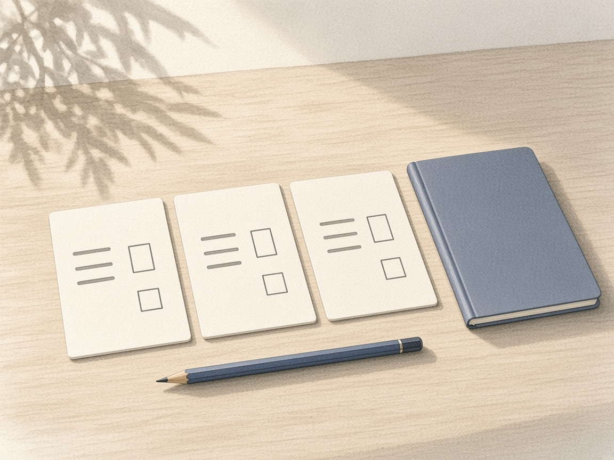

规则这周终于写到能交给别人执行。执行本身，还没有发生。
一件具体的事
周四近午，我把键盘参数忙完不久，在随手记里写了一小段。
不是要做多少个产品，而是要把一个产品给做精细了才行。搭个架子很容易，但是优化细节就很难。就目前的情况而言，手头这个投研工作台是一个不错的项目，对我自己的日常工作也有实际的作用。我要克服自己在思考上的懈怠，要去思考细节、逻辑，和怎么实现。
写完没多久，我把这句话丢给正在改工作台的对话：现在太乱了，标签要自己选，不够自主。主线随即从「把资料读得更顺」改成「打开就能看见持仓落在哪个区间」。研究没给出数字，就显示未给出，不许编一个价格出来。
同一周稍早，我还在跟一条均线口径较劲。算今天的均线时，「今天」算第 0 根还是第 1 根，会差出一根 K 线。差这一根，工具上写的「均线还在往上」和盘面上的方向就不是一回事。我按课程里的原则把它定成二十日前的收盘，并让工作台改过来。临时开的实例对上了，线上那台要等我自己重启，才真的换了口径。
然后我要求把「现在市场算哪个阶段、能不能小试一笔」写成给交易员看的手册。对方不懂金融，只懂操作。于是条件全部变成可以核对的数字：哪一天、收在哪条线的哪一侧、买还是减、到哪天还没出现就放弃。三张卡片，一只宽基、一只个股、一只短债，最坏会亏多少事先写在脚注里。第二天、第三天早上的检查都回了一句：无动作。
周五晚上我又问了一家一直拿着的公司该不该减。打开的那页写着：现在不减。减仓区在更高的一截，这份文件没有规定减多少股。我没有下单。

这件事让我看见了什么
上周我还在问，今天做的事情究竟改变了什么。这周有一个比较具体的回答：改变发生在口径被定死的那一下，不发生在又多出来的一个页面上。
听完一整条课程、把规则画进白板，只是让我能复述。真正卡住我的是那根 K 线。今天算不算进去，决定了「还在涨」和「已经拐了」哪一句成立。工具在这里帮得上忙，也帮倒忙：它跑得很快，快到会把差一根的算法写进每天都会看的那一栏，而我若只看结论，就会把错误当成纪律。
手册也是同一种收紧。我先得到的是一段阶段判断，类比、胜率、宏观背景都在。我改口之后，这些都得让路给「明天开盘交易员该按哪三个数字做」。能交给别人执行的句子，比能说服自己的句子短得多，也难写得多。难的不是找到一个观点，是把观点收成一个不会被临时情绪改写的动作。
工作台这头同样。我明确说了，信息仍从上游拉，改动不要推回去，也不要动我自己的那套命令。收工时测试被报成全部通过，可我当天没有独立再跑一遍，新开的预览最后打不开，旧地址上还是旧代码。磁盘上能核对的是一堆未提交的文件，不是一个我已经在用的新界面。
「做精细」于是有了一个我不舒服的定义。不是功能清单更长，是我愿不愿意为一次口径、一次重启、一次「现在不减」停下来核对。沙盒里通过，和我自己看见，不是同一件事。这周至少有两处工具先报了修好或报了一个更整齐的原因，随后被线上结果或另一份日志打回来。我开始把这种打回当成进度，而不是打扰。
身体那边也在用同一把尺子。体检把血脂标得很高。我没有把它写成又一个待研究的课题，只写下三件能在下周核对的事：饭怎么换、每天走多少、两周后抽血。写下不等于做到。它和那本交易手册一样，价值要等下一次回看，不是等写完的那一刻。
一个没想透的问题
一条写给别人执行的规则，要怎样才算被我自己执行过？
这周手册在，晨检在，点位也在。两次检查都是无动作，一次问答是现在不减。无动作可能是纪律，也可能只是还没到要动手的那天。如果下周那个事先写好的触发出现了，我做了，才算这条链转过一圈；如果它出现了而我没做，我得能说出没做的原因，并且这个原因不是「再看看」。在那之前，我还不能把「规则已经写好」说成「我已经按规则在做」。